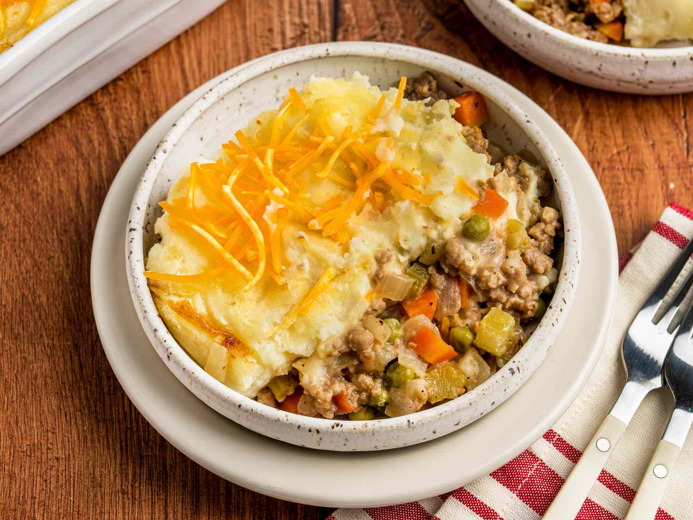

Vegan Shepherd's Pie

Description
This vegan shepherd's pie is just like the one my mom used to make, but it's made with plant-based meat
and vegan ingredients for a satisfying savory casserole everyone can enjoy.
Ingredients
Top Layer:
- 5 russet potatoes, peeled and cut into 1-inch cubes
- 1/2 cup vegan mayonnaise
- 1/2 cup soy milk
- 1/4 cup olive oil
- 3 tablespoons vegan cream sheese substitute
- 2 teaspoons salt
Bottom Layer:
- 1 tablespoon vegeetable oil
- 1 large yellow onion, chopped
- 2 carrots, chopped
- 3 stalks celery, chopped
- 1/2 cup frozen peas
- 1 tomato, chopped
- 1 teaspoon italian seasoning
- 1 clove garlic, minced
- 1 pinch ground black pepper
- 1 (12 ounce) package of plant based ground beef substitute
- 1/2 cup shredded cheddar style cheese
Steps:
- Gather and prepare all of your ingredients
- Place the potatoes in a pot, cover with cold water, boil until tender (About 25 minutes)
- Stir in the mayonnaise, milk, olive oil, cream cheese, and salt in the potatoes. Mash until smooth
- Preheat oven to 400 degrees F, and spray a 2 quart baking dish with cooking spray
- Heat oil in large skillet. Add in onion, carrots, celery, forzen peas, and tomato. Cook for 10 minutes.
Stir in italian seasoning, garlic, and pepper
- Reduce heat to medium-low, add plant based ground beef, and cook for about 5 minutes
- Spread meat substitue and vegetable mixture into the bottom of the baking dish
- Top with mashed potatoes, in an even layer, and sprinkle the potatoes with shredded cheddar cheese
- Bake in oven until cheese is melted and slightly browned and the casserole is hot, about 20 minutes
- Enjoy!
Directions back to the home page.